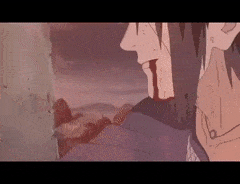

|
|
|
> Uchiha Itachi: Ölümü

Itachi'nin kardeşi Sasuke yıllarca ağabeyine kin
besleyerek büyümüştür. 12 yaşında Konoha'dan ayrılıp
Orochimaru adlı eski Akatsuki üyesi, 3. Hokage'nin ölümünden
sorumlu suçlunun yanına eğitilmek için gitmiştir. 15 yaşında
Orochimaru'yu öldürüp kendini özgür kılmış, 16 yaşındaysa kendi
suç örgütü Hebi (Yılan) ile ağabeyinin karşısına çıkmıştır. Ağabeyi
gibi Mangekyou Sharingan açamamış olduğundan Itachi karşısında pek
bir varlık gösteremez. Buna rağmen Itachi ölümcül bir hastalığa
yakalanmıştır ve savaşta bilerek aldığı darbelerin de etkisiyle bitkin
düşer, ölmeden önce kardeşine parmak darbesi(çocukluğunda hep yaptığı
gibi) ile önemli güçler bırakır (aynı zamanda Amaterasu'sunu yeniden
programlayıp Uchiha Obito'nın sharinganını görür görmez Amaterasu'yu
etkinleştirmesini sağlar) ve bu dövüşün hayalini kuran saygıdeğer
Itachi, Sasuke'den onu affetmesini isteyerek mutlu bir şekilde hayata
gözlerini yumar.
|